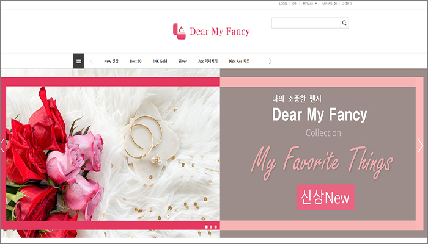
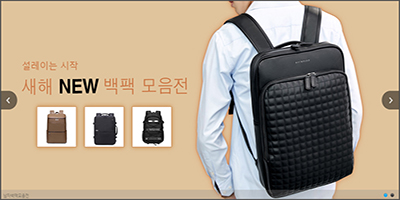
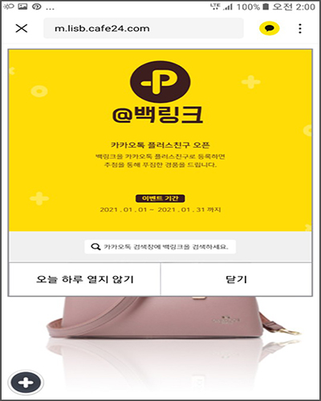

5.포토폴리오용 쇼핑몰
카페24,고도몰 솔루션을 이용해서 포토폴리오용 쇼핑몰을
만들어보았습니다.
아래 화면을 클릭하시면 해당 PC쇼핑몰로
이동합니다.
<고도몰 포토폴리오 쇼핑몰> 클릭

쇼핑몰 주소 > http://gatsby.godomall.com/
<카페24 포토폴리오 쇼핑몰> 클릭

쇼핑몰 주소 > http://lisb.cafe24.com/
아래는 모바일 쇼핑몰 포토폴리오입니다.
옐로우 팝업창을 클릭하시면 카카오톡 플러스채널을 추가할수 있습니다.
PC화면이 아니고 모바일 쇼핑몰이므로 아래의 모바일 주소를 핸드폰에서
검색포털사이트 네이버,다음에서 검색해서 보셔야 더 잘 보입니다.

모바일주소 모바일에서 복사 +붙혀넣기(ctrl+c) > m.lisb.cafe24.com/